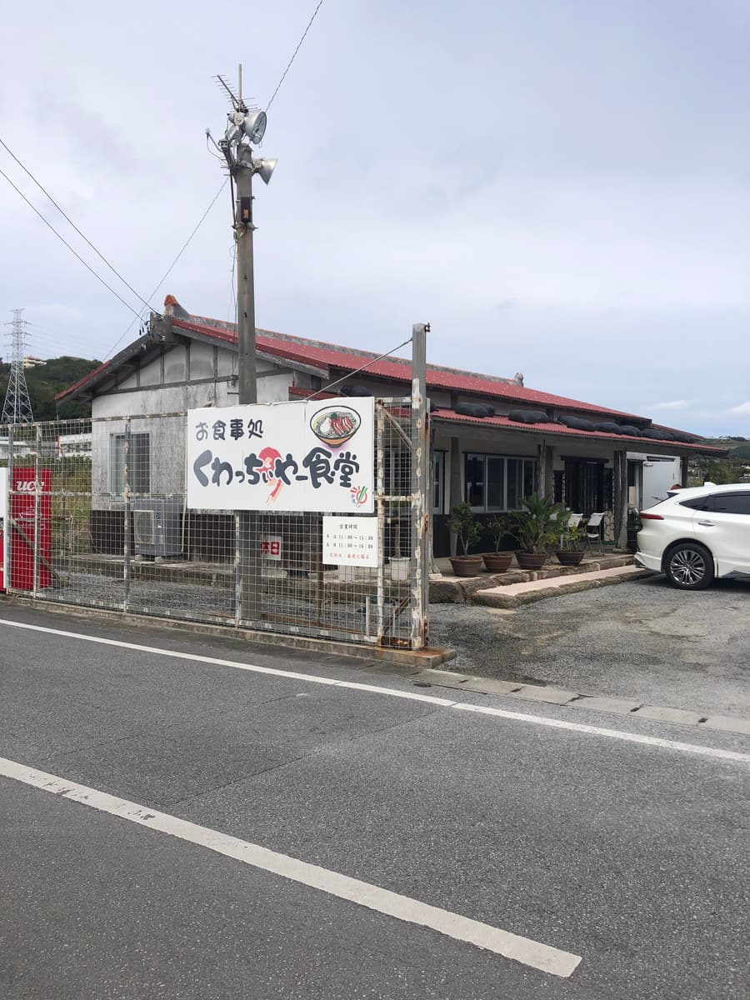
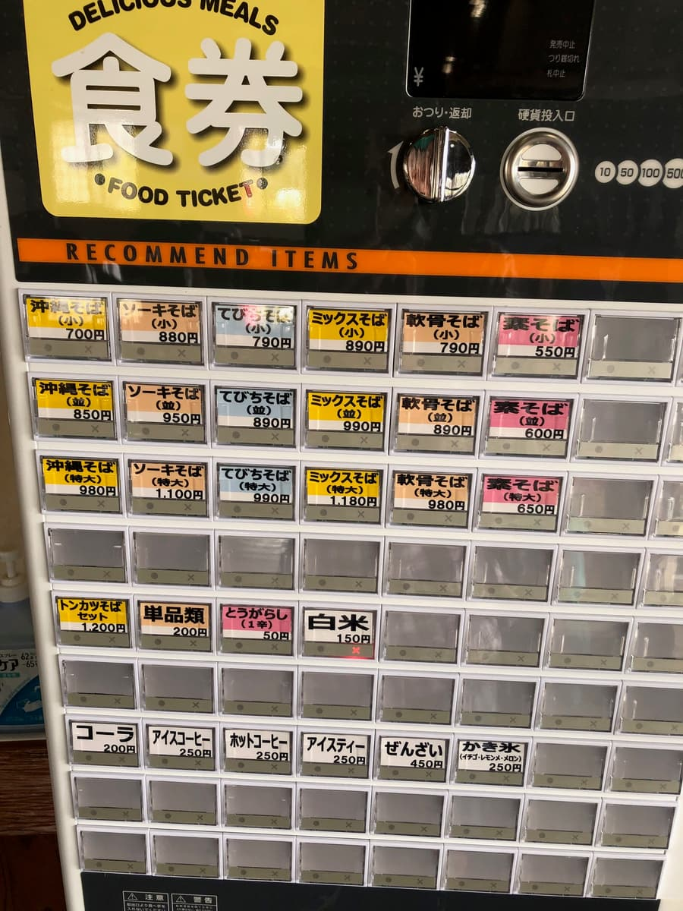
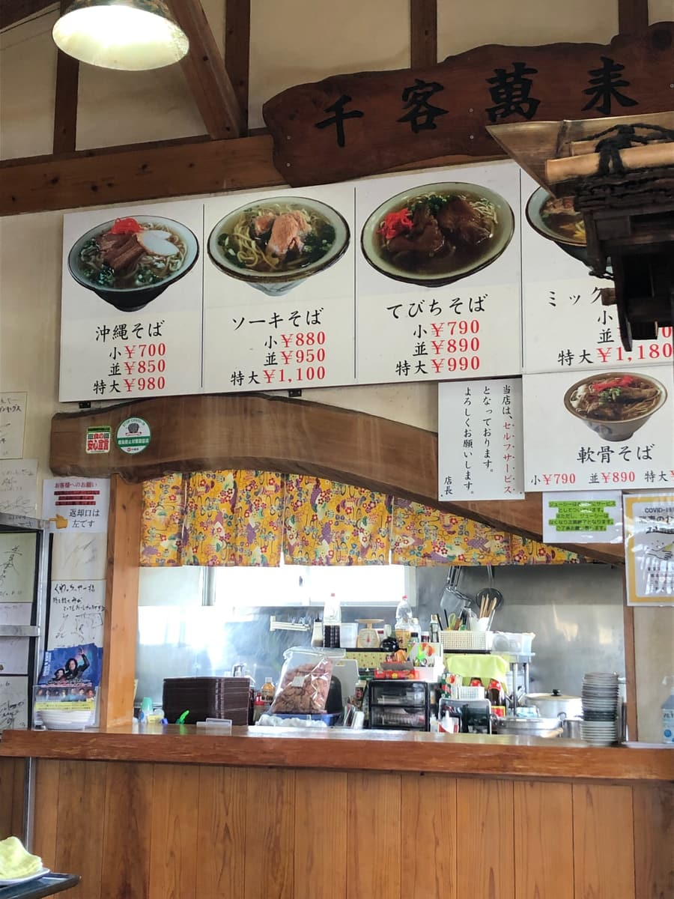
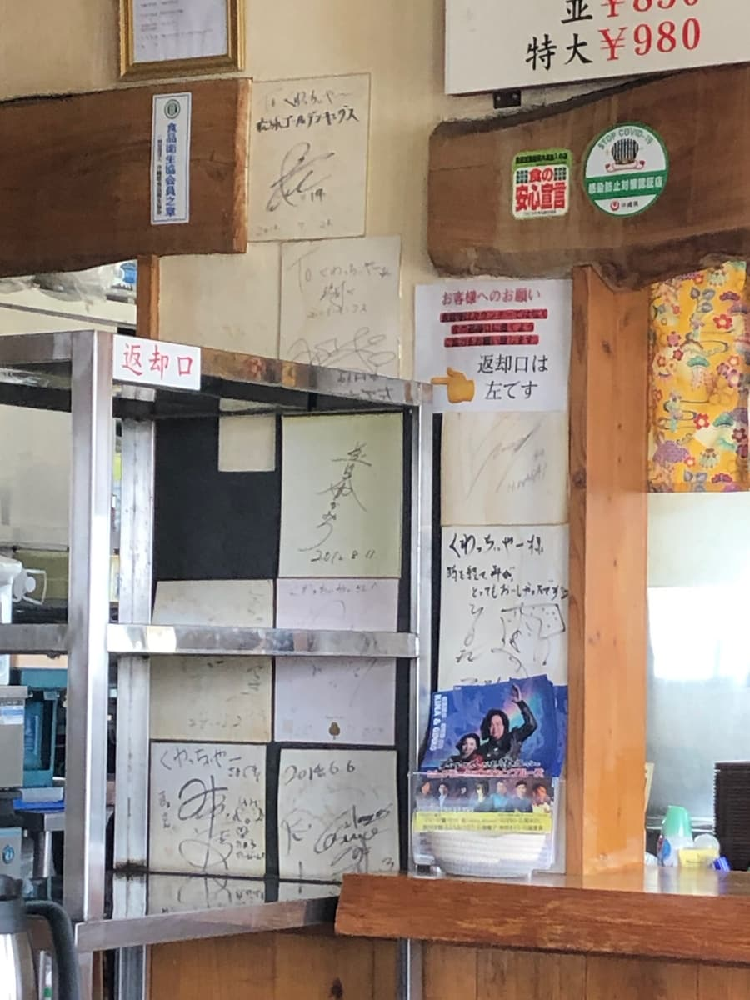
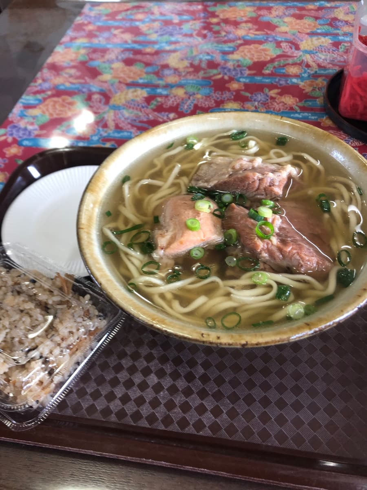
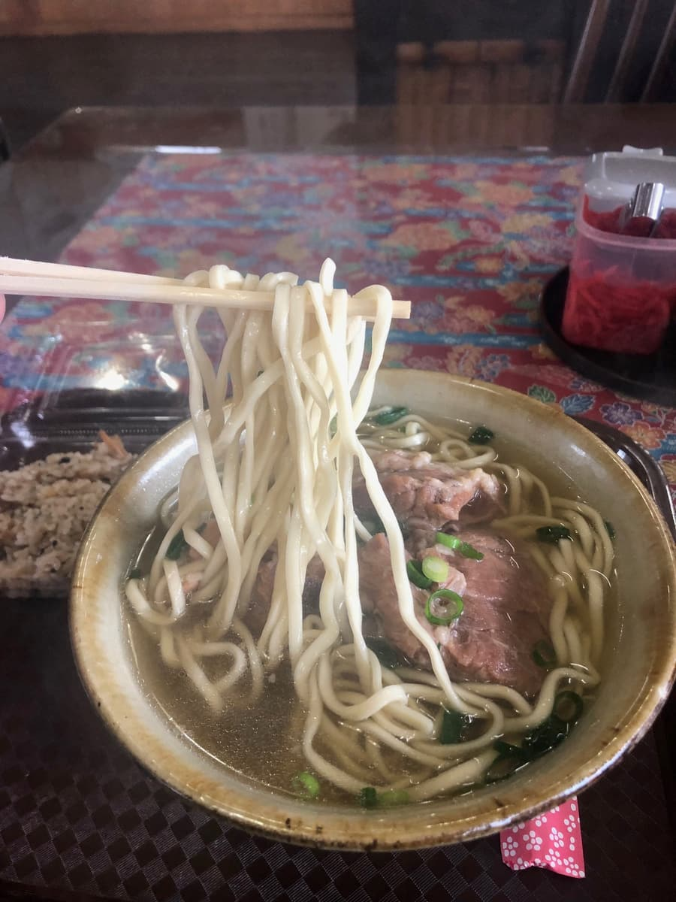

※こちらの記事はＡＩ（Chat GPT 5.2 Thinking）で作成したものを一部加筆しています😆 2025.2に食べました😄
中城村安里で沖縄そば巡りしてきました🍜✨ 今回お邪魔したのは「くわっちぃやー食堂」さんですね。場所はぱっと見、通り沿いで「お、ここ？」ってなる素朴な外観で、看板もいい味出してます。

立地的に観光客でギュウギュウって感じではなくて、正直「今日は空いてるかも？」って思いながら入ったんですが、これが意外と地元のお客さんで賑わってるんですよね。こういう“生活に馴染んでる食堂感”って、沖縄そばの良さの一つだな〜って思います😊


入店すると食券スタイルで、券売機がどーん。メニューも分かりやすくて、沖縄そば・ソーキそば・てびちそばあたりがしっかり揃ってる印象ですね。今回は迷わず「ソーキそば」にしました。しかも嬉しいことに、サービスでジューシー付きなんです…これはテンション上がりますね🍚✨

待ってる間、店内を見回すとサイン色紙がずらっとあって、長く愛されてるお店なんだろうな〜って空気が伝わってきますね。内装も派手じゃなくて落ち着く感じで、サクッと食べて帰る人もいれば、ゆっくりおしゃべりしながら食べてる人もいて、地元の昼ごはんの中心って感じがしました。

さて、到着したソーキそばがこちら。第一印象は「汁だく！」ですね。スープがしっかり多めで、見た目からもう“あったまる系”です。ひと口飲むと鰹出汁が効いてますね。正直、めちゃくちゃ衝撃！ってタイプではないんですが、普通に「まあまあ美味い」って素直に言える安心感があります☺️

麺は中太のストレートタイプで、食感はやわらかめですね。コシでガツン！というより、つるっと食べやすいタイプ。柔らかい麺が好きな人はハマると思いますし、逆に“むっちり硬め派”の人は少し物足りないかもです。記憶に残るパンチは控えめ…ってところです。
そして主役の本ソーキ。見た目はしっかり存在感あるんですが、味付けはあっさり系ですね。柔らかい部分もある一方で、やや筋感が残るところもあります。
サービスのジューシーもいただきます。こちらも味はあっさり目で、濃いめに炊き込んだタイプではなくて、そばと一緒に食べてちょうどいいバランスですね。ソーキそばが汁だくなので、ジューシーと交互に食べると口の中が整う感じで、これは嬉しい組み合わせでした🍚🍜
評価（9点/15点）：全体を通しての本音を言うと、「めちゃくちゃ推し！」ってよりは“地元で普通に通いたくなる、普通の一杯”って感じですね。派手さはないけど、鰹出汁の効いた汁だくスープと、柔らかめ中太ストレート麺、あっさりソーキ、そしてジューシーのサービス。このセットで満足感はしっかりあります。観光で「ここだけは絶対！」っていう目的地にするより、近くに来た時にふらっと寄って、日常の沖縄そばを楽しむお店って印象でしたね🏝️✨ 地元のお客さんで賑わってるのも納得です。
麺 ：★★★☆☆（3）
スープ：★★★☆☆（3）
具 ：★★★☆☆（3）